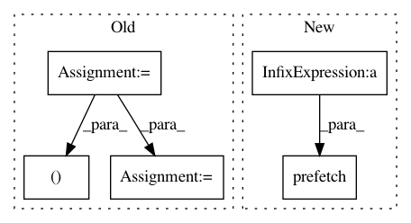

88b164b98c209ea8e2afbfae93a01b9aacd8b0ab,tools/train_shadownet.py,,train_shadownet,#Any#Any#Any#Any#,65
Before Change
// decode the tf records to get the training data
decoder = data_utils.TextFeatureIO(char_dict_path=ops.join(cfg.PATH.CHAR_DICT_DIR, "char_dict.json"),
ord_map_dict_path=ops.join(cfg.PATH.CHAR_DICT_DIR, "ord_map.json")).reader
images, labels, imagenames = decoder.read_features(ops.join(cfg.PATH.TFRECORDS_DIR, "train_feature.tfrecords"),
num_epochs=None, input_size=cfg.ARCH.INPUT_SIZE,
input_channels=cfg.ARCH.INPUT_CHANNELS)
inputdata, input_labels, input_imagenames = tf.train.shuffle_batch(
tensors=[images, labels, imagenames], batch_size=cfg.TRAIN.BATCH_SIZE,
capacity=1000 + 2*cfg.TRAIN.BATCH_SIZE, min_after_dequeue=100, num_threads=num_threads)
inputdata = tf.cast(x=inputdata, dtype=tf.float32)
// initialise the net model
After Change
// num_parallel_batches=num_threads,
// drop_remainder=True))
dataset = dataset.apply(tf.contrib.data.shuffle_and_repeat(cfg.TRAIN.BATCH_SIZE*num_threads*16))
dataset = dataset.prefetch(buffer_size=cfg.TRAIN.BATCH_SIZE*num_threads)
iterator = dataset.make_one_shot_iterator()
input_images, input_labels, input_image_names = iterator.get_next()
// initialise the net model
In pattern: SUPERPATTERN
Frequency: 3
Non-data size: 5
Instances
Project Name: MaybeShewill-CV/CRNN_Tensorflow
Commit Name: 88b164b98c209ea8e2afbfae93a01b9aacd8b0ab
Time: 2018-09-28
Author: debenito@unternehmertum.de
File Name: tools/train_shadownet.py
Class Name:
Method Name: train_shadownet
Project Name: pytorch/fairseq
Commit Name: 7633129ba8d5f0e28bd6b6d6027b14352482ef31
Time: 2019-01-04
Author: myleott@fb.com
File Name: fairseq/data/token_block_dataset.py
Class Name: TokenBlockDataset
Method Name: prefetch